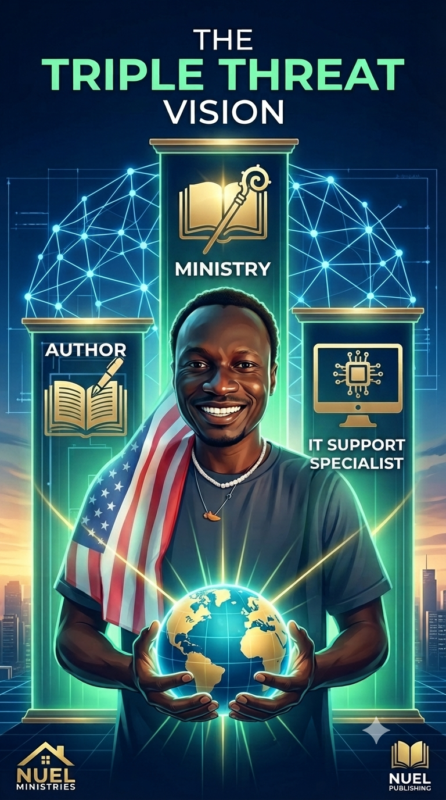

Technology • Leadership • Systems Thinking
Technology changes every year. Principles last generations. Digital Philosophy explores the ideas, systems, and mindset behind building meaningful technology.
Most people focus on software. Few people focus on thinking. This series explores how technology shapes leadership, business, human behavior, and the future of digital ecosystems. Each episode represents an idea—not just another tutorial.
Episode 1
Using technology to empower businesses, creators, and communities rather than replace them.
Episode 2
Viewing human productivity through systems engineering, automation, and operational discipline.
Episode 3
Exploring invisible systems, automation, and synchronization that quietly shape modern life.
Episode 4
A vision for future leadership, digital transformation, and the next generation of organizations.
Core Belief
Every system should simplify life, increase opportunity, and create freedom for people to focus on meaningful work. Technology is most valuable when it amplifies human potential.